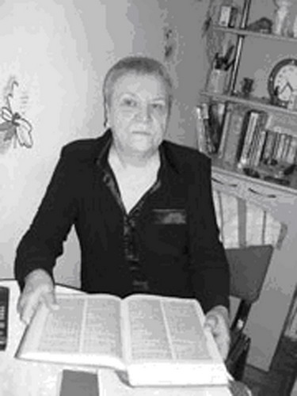

ГДЕ-ТО ТАМ, В ПОЛЬШЕ
Несколько десятилетий новгородка Раиса БОРОНЕНКО искала следы своего отца, пропавшего на фронте без вести в августе 1941 года.
Я никогда не видела отца…
Своего отца Раиса не видела никогда. Когда в июле 1941 года 27-летний Сергей ушел на фронт, его жена Лида ждала ребенка. Девочка появилась на свет в феврале 1942-го. В первое время от Сергея пришло несколько писем, по которым родные предположили, что он где-то под Орлом. Последним пришел конверт с единственной фотокарточкой. На ее обороте — несколько строчек, написанных торопливым почерком перед отправкой на передовую. Больше никаких известий о Сергее не приходило. А потом почтальон принес известие, прочитав которое молодая жена выронила из рук: «Пропал без вести».
Но надежда, что муж еще вернется домой, не пропала. Рая хорошо помнит, что в ее семье всегда говорили об отце, как о живом. И ждали, ждали... Тем более, что после войны и в их тверской поселок Калашников стали возвращаться военнопленные. Среди них были и те, кто после немецкого плена побывал в наших, уже советских лагерях. Об этом в те годы говорили шепотом, украдкой. У Раисы навсегда в памяти остался тот день, когда с войны вернулся брат отца, и в семье опять заговорили о пропавшем без вести Сергее. Лида всю свою жизнь ждала его, не желая верить, что в 25 стала вдовой. До тех пор, пока в ответ на ее запрос из военкомата не пришло сообщение: «Ваш муж погиб в плену».
Как это случилось? При каких обстоятельствах он попал в плен? Теперь у родных Сергея было одно общее стремление — разыскать место, где он захоронен. Один за другим отправлялись запросы во всевозможные архивы и инстанции, но шли годы, а ответа на этот вопрос все не было и не было.
И вот однажды, года три назад, в новгородской квартире раздался телефонный звонок: звонила тетушка Раисы из Твери. Срывающимся от волнения голосом она сообщала, что когда сотрудники местного Фонда по розыску и увековечению памяти жертв Второй мировой войны «Жить и Помнить» зачитывали по радио списки земляков, погибших или пропавших без вести в годы войны, совершенно случайно прозвучала до боли знакомая фамилия — Семенов Сергей Степанович.
Началось общение с Фондом, но прошло еще больше года, прежде чем семья Бороненко получила долгожданное известие, что могила рядового Семенова нашлась. Раиса Сергеевна вспоминает:
— Когда я это услышала, у меня ручьем полились слезы, я даже говорить не могла. Трубку взяла дочь. Ей и сообщили, что не только нашли место захоронения, но и добыли из архива Министерства обороны карту военнопленного. В ней было указано, что мой отец был взят в плен 29 августа 1941 года во время Смоленского сражения и отправлен в лагерь военнопленных, шталаг 308, находившийся на территории Польши в Нижней Силезии.
Дальнейшие поиски продолжились в Интернете. И то, что нашла Раиса, читать без слез было невозможно.
Шталаг 308, Нейхаммер
Первая партия военнопленных была доставлена в лагерь 17 июля 1941 года, и уже в сентябре в шталаге было зарегистрировано более 40 тыс. человек. Сегодня специалисты сходятся во мнении, что это был своего рода приемник-распределитель, откуда партии военнопленных отправлялись в другие концентрационные лагеря. Но чаще всего тысячи людей погибали уже здесь, от нечеловеческих условий. А те, кто остался жив, донесли до нас страшную картину жизни за колючей проволокой.
…Среди густого векового леса ровная площадка песчаной земли обнесена проволочной сеткой. Перед входными воротами два ряда клеток — карцеры, заполненные до отказа. А в огромном загоне под открытым небом, на котором лишь одно-единственное сооружение, бетонная уборная на тысячи военнопленных, теряющих разум от холода и голода.
В конце сентября днем еще светило солнце, но ночи становились такие холодные, что единственным спасением было зарыться в землю. Несчастные собирались группками, рыли ямки, выстилали их попадавшимися в почве корнями, и сидели там, прижавшись друг к другу. Так по лагерю ежедневно появлялись сотни ямок, которые часто превращались в могилы для тех, кто не успевал выбраться и спастись от обезумевшей толпы. А безумство наступало каждый раз, когда охранники лагеря, развлекаясь, перебрасывали через проволоку в толпу брюкву. И тогда обезумевшие от голода люди метались по лагерю, пытаясь добыть еду. После этого на земле оставались сотни мертвых и покалеченных.
В октябре холод стал совсем невыносим. У многих не было ни сапог, ни шинелей, ни шапок. И поутру, когда охрана палками будила и выгоняла на проверку закопавшихся в землю людей, многие просто не могли встать. Лишь тогда немцы решили построить некое подобие барака — приказали вырыть рвы до ста метров длиной и накрыть их цельными хвойными деревцами, которые рубили прямо за территорией шталага. Известно, что в конце 1941-го в лагере начался тиф. Фургоны ежедневно вывозили с территории сотни мертвецов. На рубеже 1941—1942 годов от тифа в шталаге Нейхаммер умерло от 4 до 6 тыс. военнопленных.
Очевидцы рассказывают, что и в таких ужасных условиях создавались подпольные группы и находились смельчаки, пытавшиеся бежать через прорытые подкопы. Таких ловили, нещадно били и помещали в карцеры. Был еще один способ наказать беглецов: их раздевали догола и палками загоняли в так называемые колодцы — четыре столба с натянутой между ними колючей проволокой. Попасть туда можно было только одним способом — раздвигая ряды колючки руками. Если провинившиеся делали это быстро, то на руках и на всем теле кожа превращалась в клочья, если медленно — попадали под град ударов. В таких колодцах держали на холоде голыми по трое суток, а потом грузили в товарные вагоны и увозили в Освенцим либо в другие лагеря смерти.
Нейхаммер был освобожден советскими войсками 13 февраля 1945 года. Рядовой Семенов до этого дня не дожил всего месяц. В списке советских солдат, погибших в шталаге 308, Нейхаммер, составленном по записям в немецкой учетной документации на советских военнопленных и Книгам Памяти, указана дата его смерти, 16 января 1942 года, и место захоронения — близ польского города Бреслау.
Живи и помни
В компьютере Раисы Бороненко подробная карта Польши. Вечерами она открывает ее, подолгу смотрит на ставшие родными названия польских городов: Бреслау, Жагань... Где-то здесь, в одной из братских могил, которых так много в здешних краях, и захоронен ее отец. При помощи энтузиастов из тверского Фонда «Жить и Помнить» ей удалось узнать, в какой именно. Она так долго и часто рассматривает карту этой местности, что уверена: огромный валун, водруженный на месте захоронения, найдет с закрытыми глазами. И наконец-то, первый раз в своей жизни, побудет рядом с отцом.
Поехать в Польшу она мечтает вместе со своей внучкой Татьяной, которая все последние годы помогала в поисках своего прадеда. Вместе с бабушкой она ездила в Тверь, где в местной администрации им торжественно передали Книгу Памяти, а до этого побывала на Смоленщине, тщетно пытаясь в местных музеях найти следы рядового Семенова. По словам девочки, с той самой минуты, когда она увидела плачущую бабушку с телефонной трубкой в руках, она по-другому стала смотреть на события военных лет:
— Как-то все во мне перевернулось. Я осознала, какое горе испытали те, чьи родные не вернулись с войны. Мой прадед только начинал жить, ему было всего лишь 27 лет! Он так и не смог увидеть свою дочь, мою бабушку, обнять жену. А прабабушка всю жизнь хранила ему верность, так она и осталась в одиночестве. У нее было пять сестер, одна из них пережила ленинградскую блокаду, мы часто перечитываем ее письма. В будущем я обязательно расскажу моим детям и о своих прабабушках, и о прадеде. Чтобы и они — жили и помнили тех, кто отдал за них жизнь.
Светлана Дубовицкая, газета «Новгородские ведомости» |